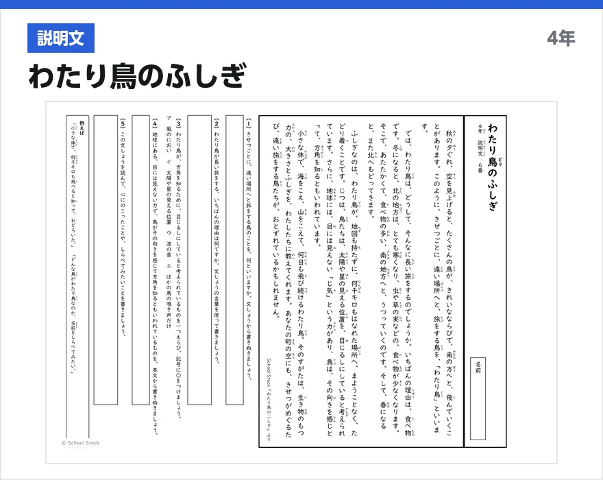

わたり鳥のふしぎ

「わたり鳥のふしぎ」を題材にした説明文の読解プリントです。本文を読んで、書かれている事実や理由を設問で確かめます。
このプリントでつく力
- 段落ごとの要点をつかむ力
- 事実と理由の関係を読み取る力
- 本文に根拠を求めて答える習慣
教室での使いどころ
- 朝学習・帯タイムの15分読解に
- 説明文単元の導入前後の力だめしに
- 宿題・自主学習の1枚として
仕様（印刷まわり）
- A4横向き・縦書き・全漢字ルビつき
- 問題＋赤字解答＋解説の3枚組（答えは問題面に赤字で書きこみ済み）
- 学年・番号・題名入りで、複数配布しても区別しやすい
- モリサワUD教科書体を埋め込み・そのまま印刷OK